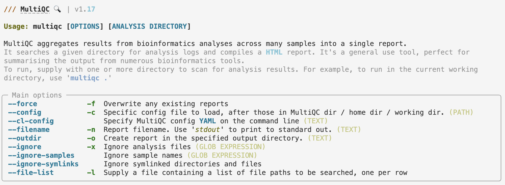

Read preprocessing
Introduction
The first series of steps our bacterial whole-genome analysis workflow concerns the “preprocessing” of the reads.
In part, that is just quality control (QC), which will leave the data untouched, but it also entails the removal of unwanted bits of sequence. After preprocessing, we will still have FASTQ files, just with somewhat less content.
We will preprocess our reads with the following steps:
- QC with FastQC – we already ran that yesterday, but will interpret the results now
- Summarizing FastQC results with MultiQC
- Removing adapters and low-quality bases from our reads with TrimGalore
Setting up
You should have an active VS Code session with an open terminal. In that terminal, you should be be in your dir /fs/scratch/PAS2250/cabana/$USER/bact.
1 Interpreting FastQC output
1.1 FastQC HTML modules
We’ll now go through a couple of the FastQC plots/modules, with first some example plots1 with good/bad results for reference.
Overview of module results
FastQC has “pass” (checkmark in green), “warning” (exclamation mark in orange), and “fail” (cross in red) assessments for each module, as you can see below.
These are handy and typically at least somewhat meaningful, but it is important to realize that a “warning” or a “fail” is not necessarily the bad news that it may appear to be, because, e.g.:
- Some of these modules could perhaps be called overly strict.
- Some warnings and fails are easily remedied or simply not a very big deal.
- FastQC assumes that your data is derived from whole-genome shotgun sequencing — some other types of data like RNA-seq data will always trigger a couple of warnings and files based on expected differences.

Basic statistics
This shows, for example, the number of sequences (reads) and the read length range for your file:

Per base quality sequence quality
This figure visualize the mean per-base quality score (y-axis) along the length of the reads (x-axis). Note that:
- A decrease in sequence quality along the reads is normal.
- R2 (reverse) reads are usually worse than R1 (forward) reads.
Good / acceptable:

Bad:

To interpret the quality scores along the y-axis, note the color scaling in the graphs (green is good, etc.), and see this table for details:
| Phred quality score | Error probability | Rough interpretation |
|---|---|---|
| 10 | 1 in 10 | terrible |
| 20 | 1 in 100 | bad |
| 30 | 1 in 1,000 | good |
| 40 | 1 in 10,000 | excellent |
Per sequence quality scores
This shows the same quality scores we saw above, but now simply as a density plot of per-read averages, with the quality score now along the x-axis, and the number of reads with that quality score along the y-axis:
Good:
Bad:

Sequence length distribution
Will throw a warning as soon as not all sequences are of the same length (like below), but this is quite normal.
Adapter content
Checks for known adapter sequences. When some of the insert sizes are shorter than the read length, adapters can end up in the sequence – these should be removed!
Good:
Bad:

1.2 Interpreting our FastQC results
First, we’ll unfortunately have to download FastQC’s output HTML files2:
- Find the FastQC HTML files in the file explorer in the VS Code side bar.
- Right-click on one of them, click
Download...and follow the prompt to download the file somewhere to your computer (doesn’t matter where, just make sure you see where it goes). - Repeat this for the second file
- Then, open your computer’s file browser, find the downloaded files, and double-click on one. It should be opened in your default web browser.
Exercise: Interpreting our FastQC results
Open the HTML file for the R1 FASTQ file and go through the modules we discussed above. Can you make sense of it? Does the data look good to you, overall?
Now open the HTML file for the R2 FASTQ file and take a look just at the quality scores. Does it look any worse than the R1?
2 MultiQC
Here are some challenges you may run into after running FastQC:
When you have many FASTQ files, you’ll generate a lot of FastQC HTML files to sort through. Our dataset is small with only 16 samples, but this still means 32 FastQC outputs. Other datasets may easily have dozens or even hundreds of samples, in which case checking all of the output becomes a very unpleasant task.
Even if you do diligently go through each file, it’s not that easy to compare samples, since they are not drawn in the same graphs.
MultiQC addresses these problems as it aggregates FastQC results from many files, and summarizes them into a single HTML file with (still) one graph per FastQC module.
And while MultiQC is most widely used for FastQC aggregation, it can recognize and process the (often “log”-type) output of dozens of bioinformatics tools, including several others that we will be using.
MultiQC’s graphs are also interactive, but here is a static example:

2.1 Running MultiQC
To run MultiQC, use the command multiqc. Let’s start by running it with the --help option:
You should still have the cabana Conda environment active. If not, click here for instructions
# Load the Conda enviroment
module load miniconda3
source activate /fs/scratch/PAS2250/jelmer/cabanamultiqc --help
# (Only the top part of the output is shown in the screenshot below)
As the first couple of help lines in the paler gray color explain, MultiQC will search the [ANALYSIS DIRECTORY], a dir that we pass to it as an argument at the end of the command line.
That is, if we tell MultiQC about the results/fastqc_pretrim directory like so, it should find and then aggregate all the FastQC results in there:
# (Don't run this - we'll complete the command in a second)
multiqc ../../bact_results/fastqc_pretrimThe default output directory of MultiQC is the current working directory, so just like with FastQC, we do want to use that option as well3:
# Run MultiQC to summarize the FastQC results
multiqc \
--outdir results/multiqc_fastqc \
../../bact_results/fastqc_pretrim
2.2 MultiQC output
Then, you should have some files in the output dir:
ls -lh results/multiqc_fastqctotal 1.7M
drwxr-xr-x 2 jelmer PAS2250 4.0K Feb 4 14:57 multiqc_data
-rw-r--r-- 1 jelmer PAS2250 1.7M Feb 4 14:57 multiqc_report.htmlGo ahead and find the HTML file in VS Code’s file browser, right-click on it and then download it to your computer, and click on the file in your own computer to open it in your browser (i.e., just like we did with the FastQC output).
Exercise: Explore the MultiQC results
Check for example whether patterns are consistent across samples, or if there are any outliers.
3 TrimGalore
We will run TrimGalore to filter our FASTQ files, removing:
- Any adapter sequences that may be present in the reads
- Poor-quality bases at the start and end of the reads
- Very short reads (in most cases made short by the prior two steps)
Several largely equivalent tools exist for this kind of FASTQ preprocessing — Trimmomatic and fastp are two other commonly used ones. (And TrimGalore itself is mostly a wrapper around another tool called CutAdapt.)
Two advantages of of TrimGalore are that it will auto-detect the adapters that are present in your reads (e.g., different library prep protocols use different adapters), and that it can automatically run FastQC on the processed sequences.
Unfortunately, we’ll first have to switch Conda environments for TrimGalore:
source activate /fs/ess/PAS0471/jelmer/conda/trimgalorePaired-end trimming
From the line below “USAGE:”, we can tell that the FASTQ file name(s) should be specified as positional argument(s) at the end of the command.
We will run TrimGalore for one sample at a time, but because we have paired-end reads:
We’ll specify two FASTQ file names: one with the forward (R1) reads, and one with the reverse (R2) reads.
We’ll have to use the
--pairedoption (otherwise, TrimGalore will only process the R1 and R2 files separately, and omit the final step where it removes orphaned reads — see the box below for details).
When we have paired-end reads, much of the trimming happens separately for the R1 (forward) and R2 (reverse) files, but at the end of the run, TrimGalore will make sure that every R1 read still has its R2 counterpart, and vice versa.
Any “orphaned” reads will by default be removed, because R1 and R2 files for the same samples always need to contain all the same reads. (TrimGalore does have an option to retain these orphaned reads into separate files, but we won’t use that.)
So far, our command looks like this:
# (Don't run this)
trim_galore \
--paired \
data/fastq/SM04_R1.fastq.gz \
data/fastq/SM04_R2.fastq.gz3.1 Other TrimGalore options
You might also want to run TrimGalore with the --help option to learn how to run it:
trim_galore --help
# Note: Below I am only showing (truncated) output for the key options! USAGE:
trim_galore [options] <filename(s)>
--paired This option performs length trimming of quality/adapter/RRBS trimmed reads for
paired-end files.
-o/--output_dir <DIR> If specified all output will be written to this directory instead of the current
directory. If the directory doesn't exist it will be created for you.
--fastqc Run FastQC in the default mode on the FastQ file once trimming is complete.
--fastqc_args "<ARGS>" Passes extra arguments to FastQC.
-a/--adapter <STRING> Adapter sequence to be trimmed. If not specified explicitly, Trim Galore will
try to auto-detect whether the Illumina universal, Nextera transposase or Illumina
small RNA adapter sequence was used.
-q/--quality <INT> Trim low-quality ends from reads in addition to adapter removal.
--length <INT> Discard reads that became shorter than length INT because of either
quality or adapter trimming. A value of '0' effectively disables
this behaviour. Default: 20 bp.We will:
- Use the default settings for adapters (auto-detection and removal) and the base quality threshold (a Phred score of 20)
- Use a longer read length (36 bp) than the default of 36 bp:
--length 36. - Specify the output directory4:
--output_dir results/trimgalore. - Have TrimGalore run FastQC for us on the filtered FASTQ files, so we can e.g. check if adapters were successfully removed.
A final test command to run TrimGalore on our actual (but small, subsetted) FASTQ files in data/fastq could therefore look as follows:
# Once again, we have to make the FastQC outdir!
mkdir results/fastqc_posttrim
# Run TrimGalore
trim_galore \
--paired \
--length 36 \
--output_dir results/trimgalore \
--fastqc_args "--outdir results/fastqc_posttrim" \
data/fastq/SM04_R1.fastq.gz \
data/fastq/SM04_R2.fastq.gzMulticore support not enabled. Proceeding with single-core trimming.
Path to Cutadapt set as: 'cutadapt' (default)
Cutadapt seems to be working fine (tested command 'cutadapt --version')
Cutadapt version: 4.4
single-core operation.
igzip command line interface 2.30.0
igzip detected. Using igzip for decompressing
No quality encoding type selected. Assuming that the data provided uses Sanger encoded Phred scores (default)
Output directory results/trimgalore/ doesn't exist, creating it for you...
Output will be written into the directory: /fs/scratch/PAS2250/cabana/jelmer/bact/results/trimgalore/
AUTO-DETECTING ADAPTER TYPE
===========================
Attempting to auto-detect adapter type from the first 1 million sequences of the first file (>> data/fastq/SM04_R1.fastq.gz <<)
# [...output truncated...]The exact choice of trimming strictness parameters, especially regarding the minimum read length and minimum base quality is fairly arbitrary, and may not have a large effect on the final assembly. That said, while read lengths of 20 may still be useful in a read mapping context, they are less so in a de novo assembly context, so we use a higher read length threshold.
3.2 TrimGalore output
After you ran the command above, a lot of logging output should have been printed to screen.
For example, it reports the adapter that it detected, the final parameters passed to Cutadapt (which does the actual trimming), and results on how much sequence was removed.
Exercise: Check the TrimGalore logging output
Look for === Summary === sections (two of them, one for the R1 and one for the R2) to answer the following questions:
- What percentage of the reads had adapter sequences?
- What percentage of basepairs were quality-trimmed from the R1 and R2 files, respectively?
Look near the end of the output to answer the following question:
- How many reads were removed due to the length-filter?
Click for the solution
Some of the more relevant information that should have been printed:
- For the R1 file:
=== Summary ===
Total reads processed: 1,031,129
Reads with adapters: 398,726 (38.7%)
Reads written (passing filters): 1,031,129 (100.0%)
Total basepairs processed: 275,173,541 bp
Quality-trimmed: 7,733,000 bp (2.8%)
Total written (filtered): 266,857,947 bp (97.0%)- For the R2 file:
=== Summary ===
Total reads processed: 1,031,129
Reads with adapters: 424,883 (41.2%)
Reads written (passing filters): 1,031,129 (100.0%)
Total basepairs processed: 276,647,678 bp
Quality-trimmed: 42,814,676 bp (15.5%)
Total written (filtered): 233,141,370 bp (84.3%)- And at the end:
Number of sequence pairs removed because at least one read was shorter than the length cutoff (36 bp): 6672 (0.65%)Much of the above information is also saved in the output dir in files that end in *_trimming_report.txt.
The main output files, however, are a new pair of FASTQ files with trimmed reads — we will use those FASTQ files for the next step (assembly). Let’s take a look:
ls -lh results/trimgaloretotal 342M
-rw-r--r-- 1 jelmer PAS0471 5.2K Feb 4 16:48 SM04_R1.fastq.gz_trimming_report.txt
-rw-r--r-- 1 jelmer PAS0471 169M Feb 4 16:52 SM04_R1_val_1.fq.gz
-rw-r--r-- 1 jelmer PAS0471 5.2K Feb 4 16:52 SM04_R2.fastq.gz_trimming_report.txt
-rw-r--r-- 1 jelmer PAS0471 174M Feb 4 16:52 SM04_R2_val_2.fq.gzAlso, we should have FastQC output files that will be good to check:
ls -lh results/fastqc_posttrimtotal 2.4M
-rw-r--r-- 1 jelmer PAS0471 705K Feb 4 17:00 SM04_R1_val_1_fastqc.html
-rw-r--r-- 1 jelmer PAS0471 437K Feb 4 17:00 SM04_R1_val_1_fastqc.zip
-rw-r--r-- 1 jelmer PAS0471 724K Feb 4 17:01 SM04_R2_val_2_fastqc.html
-rw-r--r-- 1 jelmer PAS0471 470K Feb 4 17:01 SM04_R2_val_2_fastqc.zipExercise: Check the trimming results with FastQC
- Check the FastQC output HTML to see if adapters were removed, and if the overall quality looks better.
Footnotes
Attribution: Some of the FastQC example plots were taken from here.↩︎
The installed version of VS Code does not allow us to view HTML files↩︎
I will specify the dir
results/multiqc_fastqc, indicating that this is a MultiQC run that summarizes FastQC output↩︎Once again, the default output dir is the current working dir which is not convenient↩︎